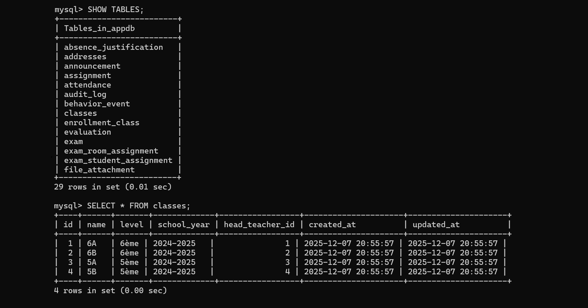

Base de données d'une école
Création d’une base de données MySQL pour la gestion d'une école,
incluant le suivi des absences, des notes et des informations des
élèves.
Le projet a consisté à concevoir le schéma relationnel, définir les
tables et leurs relations, puis à mettre en place l’environnement via
Docker pour faciliter le déploiement.

 Retour
Retour